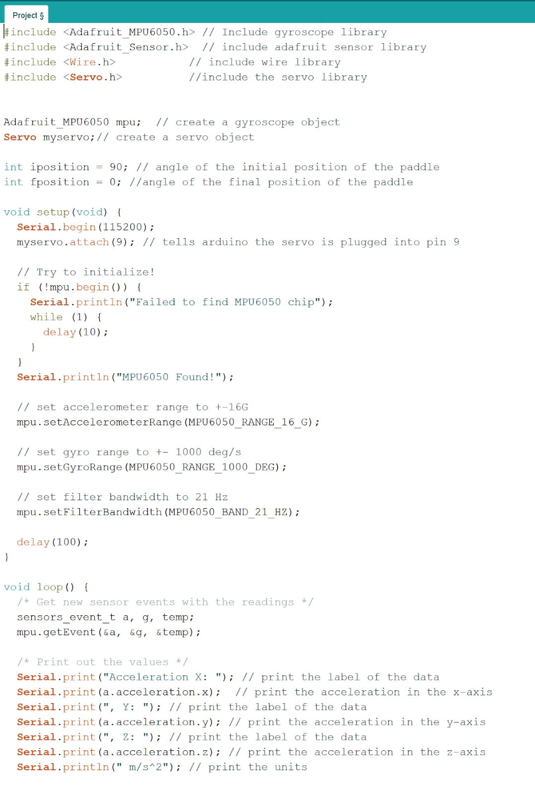
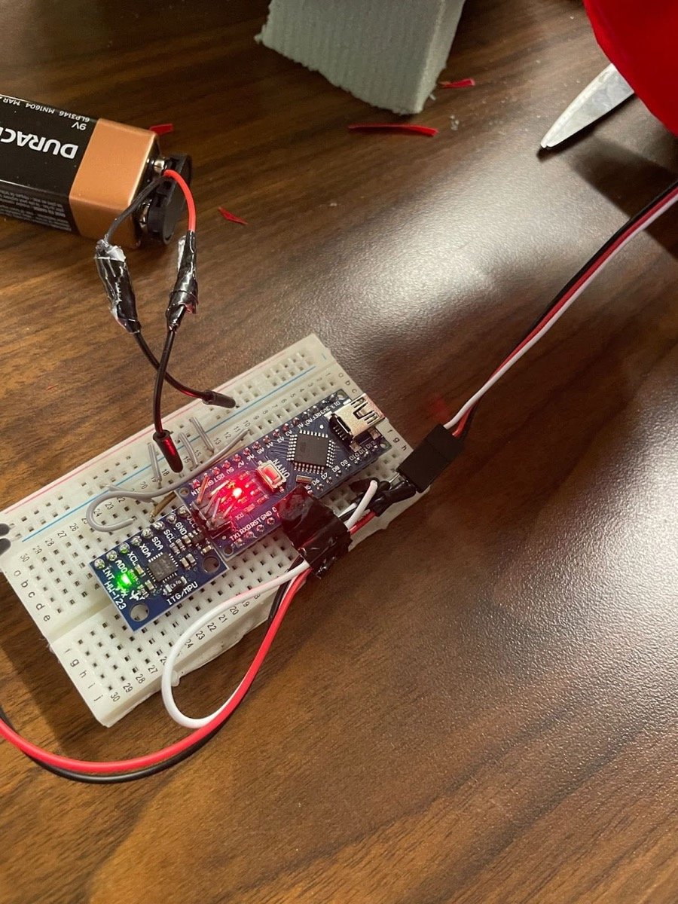

Project overview
There are some tortoises that are left vulnerable when flipped over. They shake their limbs and shift their weight but because of the shape of their shell, they are not able to flip over quickly enough unless they are aided by a wall. So for this GE1501 project, my group members and I decided to design a mechanism that helped the turtles flip over.
Key Objectives
- It must be Durable.
- It must be Aesthetically Pleasing.
- It must be Functional.
- The total cost of the project should be less than $50.
Contribution to project
Arduino Code
I wrote the Arduino code that controlled a servo depending on the orientation the gyroscope reads. If the Arduino detects the tortoise has flipped over, it sends the signal for the servo to move a paddle which helps the tortoise flip over.

Circuit wiring
After writing the code, I connected the Arduino to the gyroscope and the servo.
